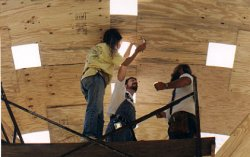
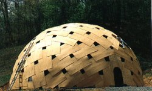
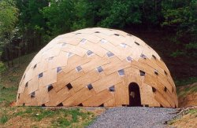
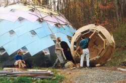

|
|
|  | The 12" round hole is the top of the dome, 22 ft. from the ground. |
| Moments later, Hope squeezes through the 12" venthole at the top of the dome. |
 |
|  | Hope installing skylights from the outside while Steve works from inside. She slid off the roof once from about this height, but was unhurt. |
| Completely assembled plydome with lexan windows, April, 1994. Assembly of plywood took 5 days with a crew of three; windows 2 days with a crew of two. |
 |
 |
We held bonfires several nights in a row. The smoke leaked out the holes left open in the top. |
| Interior of dome. | |
 |
One year later: bridge over top is supplemented with bent trees, 8 ft.x 12 ft. ventilator is barely visible. The plywood is weathered and in need of paint. |
| The dome became my workshop as well, for fabrication of other domes. Here Inge and Acorn and I are building an outhouse for the Chrysalis sphere in which they live. |
 |
| 42 Foot Plydome - Page 1 | 42 Foot Plydome - Page 2 |